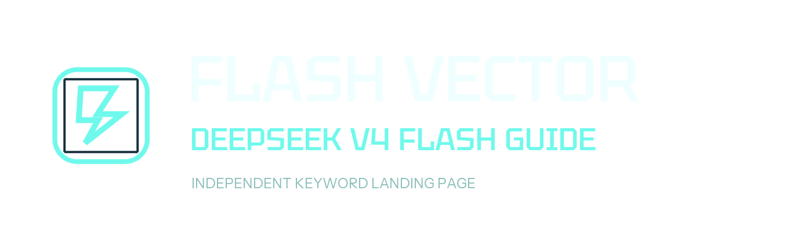

01
Shorter interaction loops
Flash-tier placement works best when the product needs frequent answers, low-friction drafting, or quick decisions before handing off to a heavier reasoning path.

Independent keyword landing page
A focused reference page for the fast DeepSeek model name. Use it as a concise read on integration shape, fit, and the kinds of product surfaces that usually benefit from a flash class lane.
This page is independent, does not use official DeepSeek branding, and was checked against public DeepSeek references on April 24, 2026.
deepseek-v4-flashapi.deepseek.comOverview
The value of a fast model lane is rarely about spectacle. It is about keeping user-facing loops light, predictable, and easy to compose inside a broader system.
01
Flash-tier placement works best when the product needs frequent answers, low-friction drafting, or quick decisions before handing off to a heavier reasoning path.
02
DeepSeek documents an API format compatible with OpenAI and Anthropic style integrations, which lowers the cost of trying a new model lane inside familiar tooling.
03
Many teams reserve their most expensive or slowest model for final reasoning, while using a quicker lane for routing, cleanup, summarization, or first-pass output.
Feature Fit
Inline assistants, help panels, triage flows, and writing aids often benefit from a fast model path that keeps the interface feeling alive.
A flash model can handle classification, extraction, planning drafts, or lightweight coding steps before a larger model is asked to do deeper work.
Because the public docs describe compatible API formats, teams can test fit with minimal structural change and decide later whether the lane deserves a permanent place in the stack.
Use Cases
Good for first response quality where the interface rewards quick, steady back-and-forth.
Useful for concise transformations, structured rewrites, cleanup passes, and formatting tasks.
Helpful when a system needs an early decision about whether to answer, search, escalate, or call tools.
Fits scoped coding, extraction, or action-selection steps that should stay fast and inexpensive.
Source Note
This site is meant to rank for the DeepSeek V4 Flash keyword while staying narrow about facts. It summarizes public references, typical flash-model fit, and the integration shape teams usually care about first.
The public DeepSeek API documentation was re-checked on April 24, 2026 and still listed
deepseek-v4-flash in example model selections. This page only builds from that public
reference layer.
The site is not an official DeepSeek property, does not reproduce official branding, and does not present speculative pricing, benchmarks, or unsupported product claims as facts.
FAQ
It is a public model identifier shown in DeepSeek API documentation. This page does not present it as a full product manual; it summarizes the keyword and the likely role of a flash class model.
No. This is an independent page built for the keyword, with original visual assets and no claim of endorsement. Official references are linked above for readers who want primary sources.
Public DeepSeek API docs describe compatible OpenAI and Anthropic style API formats, and list the model identifier in quick-start examples. This page was checked against those public docs on April 24, 2026.
Usually when response speed, frequent turns, and bounded tasks matter. If the job requires long, deliberate reasoning, teams often pair a flash lane with a heavier model instead of using only one.